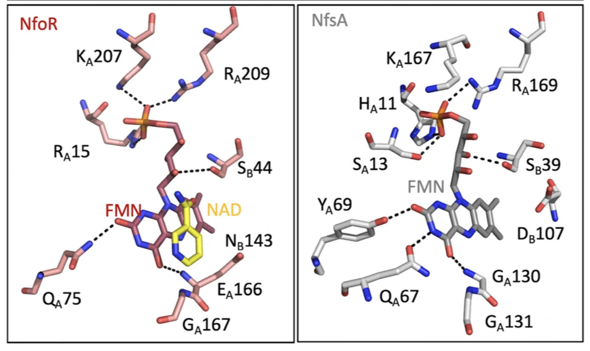
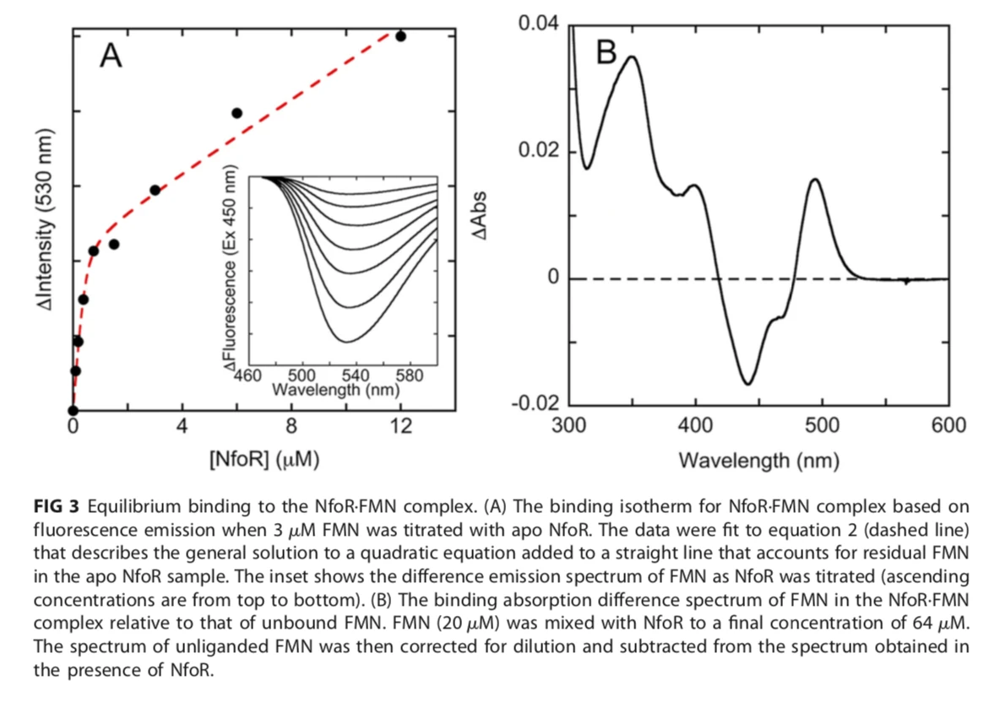
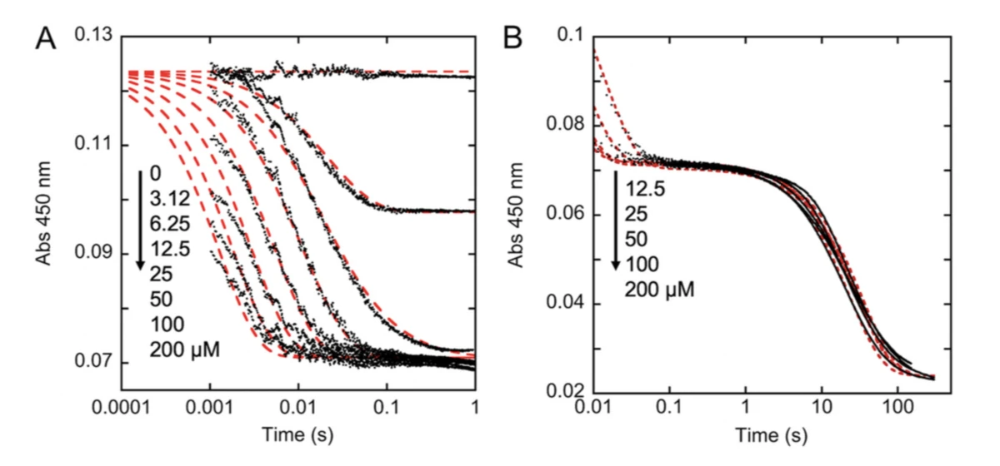
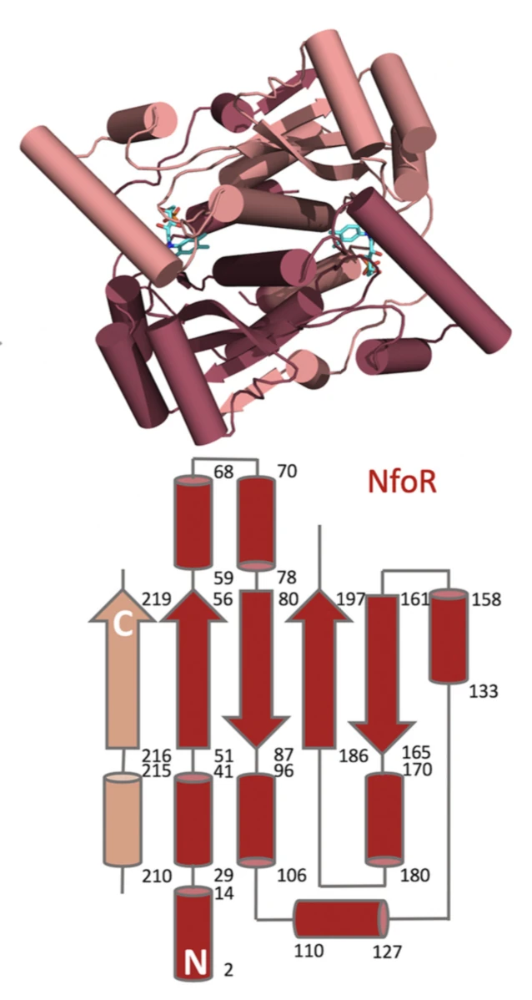

Context
When Dr. Graham Moran's group joined the NfoR project, the question shifted from 'what is this protein?' to 'what reaction does it actually catalyse?'
I solved additional NfoR structures to support a mechanistic model of flavin reduction and electron transfer.
What I did
- Determined additional NfoR structures in complex with cofactor and substrate analogues.
- Mapped the active-site residues around FMN and NAD(P)H.
- Compared binding and kinetic behaviour across NfoR variants.
- Helped reconcile structural data with the observed enzyme mechanism.
Key results
- Mechanistic revision
- FMNFlavin mononucleotide reductase
- Structural snapshots
- MultipleCofactor and active-site states
- Published paper
- 1Applied and Environmental Microbiology
- NfoR behaves as a flavin mononucleotide reductase, not simply a chromate reductase.
- The active-site architecture explains how electrons reach the flavin.
- The mechanistic scheme reframes NfoR's role in chromate reduction.
Figures




Collaborators

Dr. Graham Moran
Principal Investigator
Loyola University Chicago
Audrey G. O'Neill
NfoR enzymology
Loyola University Chicago
Dr. Brett A. Beaupre
NfoR enzymology
Loyola University Chicago
Output
Source and disclosure. Adapted from Dr. Zheng's April 2024 research summary. Published mechanistic work.